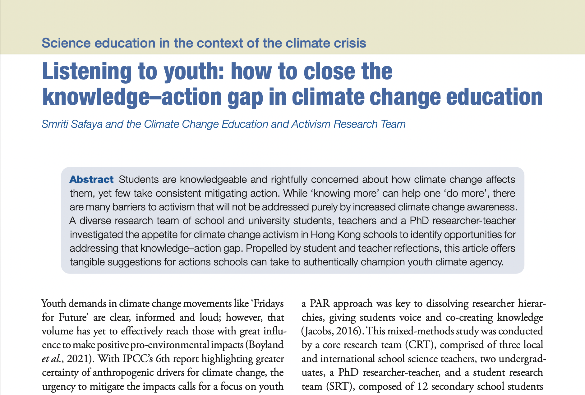
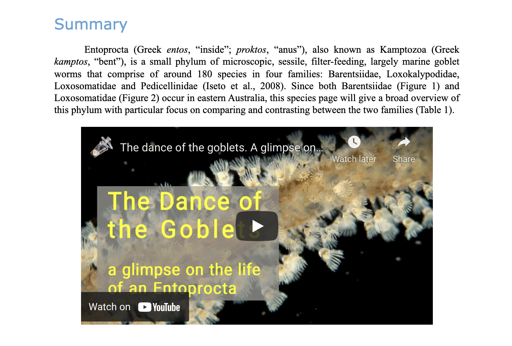
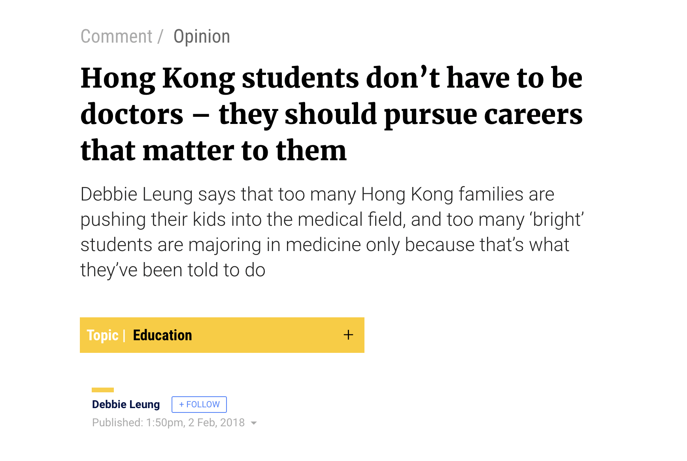

Youth Activism in Climate Change Education Climate Education

Safaya, S., Rines, M.L., Leung, D.S.K., Pang, H.L.T., Yeung, Y., Gobbi, G., Asinas, C., Schaefer, E.A.; Yu, C.K.Y., Lamond, S., Juels, T., Chu, A., Fung, H.C., Chung, C.H.V., Chung, H.L.L., Yung, Z.S., Lun, H.H.M., Ng, C.Y.J. (2021). Listening to youth: how to close the knowledge-action gap in climate change education. School Science Review, vol. 103, issue 383.
Species Description of Barentsiidae and Loxosomatidae Families Marine Zoology

Leung, Debbie (2020). Comparison and Contrast of Barentsiidae and Loxosomatidae in terms of Life History, Behavior, Anatomy, Physiology, Ecology, Systematics and Biogeographical Distribution. Invertebrates of the Coral Sea.
Opinion Piece on Career Choices in Hong Kong Higher Education

Leung, Debbie (2018). Hong Kong students don't have to be doctors -- they should pursue careers that matter to them. South China Morning Post.